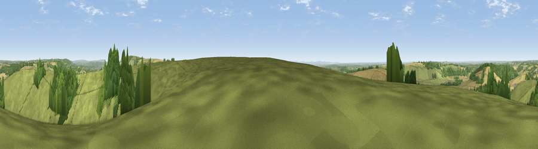

Viewpoint near East Meon
#11961 in England · top 15% of its area beats it · near East MeonWhere it is
The exact computed spot (SU 67275 20225). Click the marker for map links.
The view, rendered

A 360° render of this exact spot computed from the terrain model, tree cover and land cover — summer colours, afternoon light, calibrated against photographs of famous viewpoints. Real trees, hedges and buildings will differ in detail.
The panorama
Grey silhouette: terrain skyline in each direction (720 bearings, Earth curvature and refraction included). Dashed green: skyline with trees (+15 m) and buildings (+8 m) as obstacles. Blue strip: how far the ground is visible on each bearing.
Where the view opens
Wedge length = distance to the farthest visible ground on that bearing (vegetation-aware). Rings at 10, 25 and 50 km.
What fills the view
68% grassland · 20% woodland · 11% cropland
Angular shares of the visible panorama (visual magnitude), not map area. Landscape diversity 0.37 (0–1 Shannon).
Key numbers
More beautiful places nearby
The staircase of upgrades: each row has a higher view potential than everything closer. Driving times are estimates from straight-line distance, calibrated against real road routing — check an actual route before setting out.
| Place | Direction | Drive | Score |
|---|---|---|---|
| Viewpoint near East Meon | E · 0 km | ~1 min | 61.2 |
| Salt Hill | SSE · 1 km | ~2 min | 74.3 |
| Viewpoint near Meonstoke | W · 3 km | ~8 min | 74.8 |
| Viewpoint near Buriton | E · 4 km | ~10 min | 75.3 |
| Viewpoint near Buriton | E · 5 km | ~10 min | 80.0 |
| Beacon Hill | E · 14 km | ~25 min | 85.8 |
| Viewpoint near Upper Bonchurch | SSW · 43 km | ~62 min | 86.4 |
| Mottistone Down | SW · 44 km | ~65 min | 87.2 |
50.97752, -1.04311 · source: screening · position refined by local search. Computed location — check access rights before visiting.